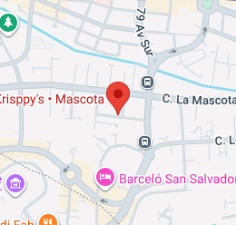

Invitación a la fiesta de cumpleaños
¡Estás cordialmente invitado al cumpleaños de Fernando Cruz!
Ver detalles
Detalles del evento
Fecha: 27 de Septiembre de 2025
Hora: 6:00 PM
Lugar: Pizza Krispys La Mascota
